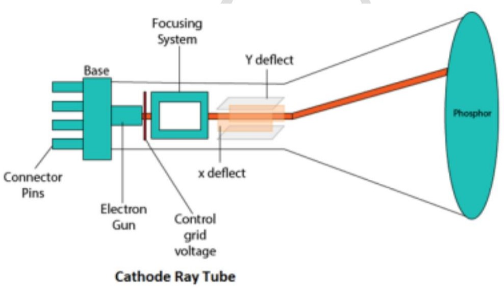
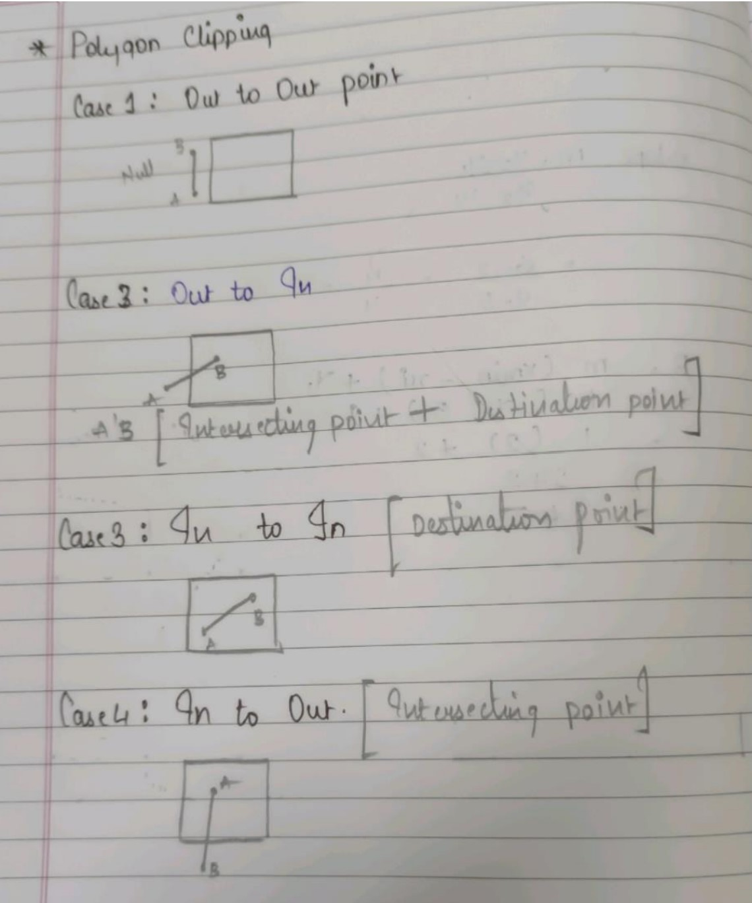
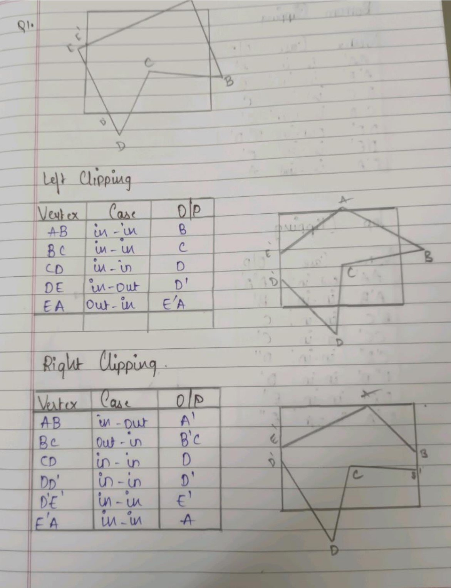
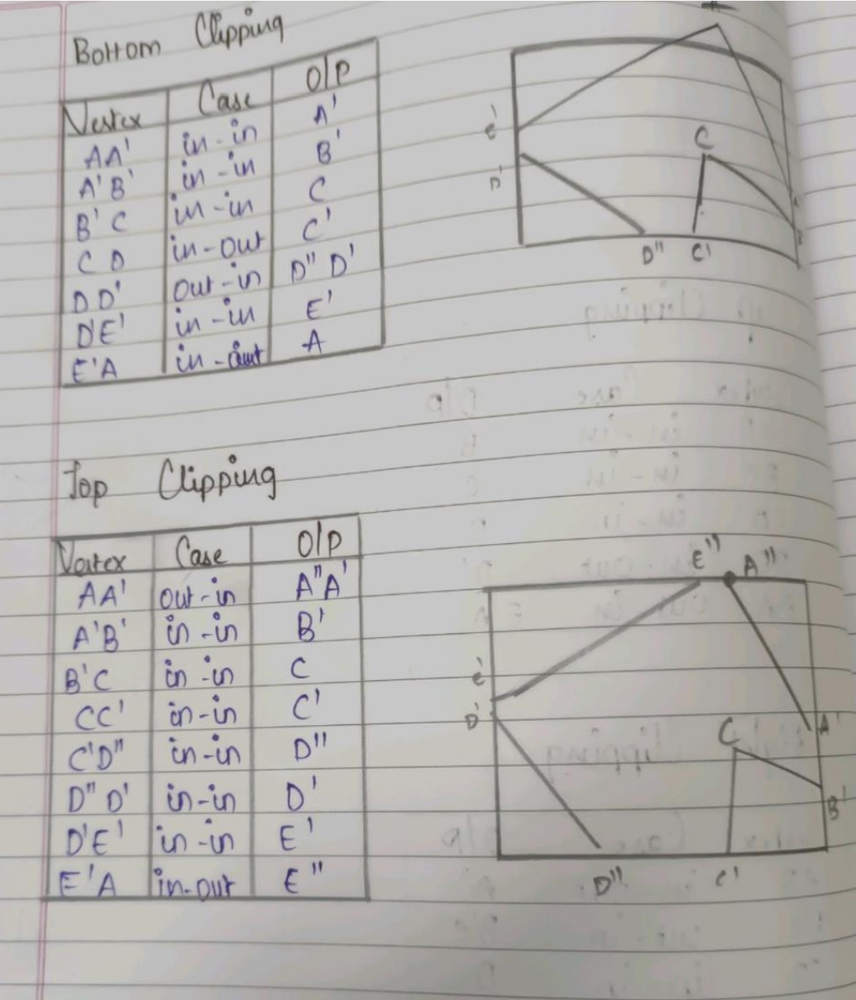

Explain CRT with diagram.

CRT stands for Cathode Ray Tube. CRT is a technology used in traditional computer monitors and televisions. The image on CRT display is created by firing electrons from the back of the tube of phosphorus located towards the front of the screen.
Once the electron heats the phosphorus, they light up, and they are projected on a screen. The color you view on the screen is produced by a blend of red, blue and green light
Components of CRT:
1. Electron Gun: Electron gun consisting of a series of elements, primarily a heating filament (heater) and a cathode. The electron gun creates a source of electrons which are focused into a narrow beam directed at the face of the CRT.
2. Control Electrode: It is used to turn the electron beam on and off.
3. Focusing system: It is used to create a clear picture by focusing the electrons into a narrow beam.
4. Deflection Yoke: It is used to control the direction of the electron beam. It creates an electric or magnetic field which will bend the electron beam as it passes through the area. In a conventional CRT, the yoke is linked to a sweep or scan generator. The deflection yoke which is connected to the sweep generator creates a fluctuating electric or magnetic potential.
5. Phosphorus-coated screen: The inside front surface of every CRT is coated with phosphors. Phosphors glow when a high-energy electron beam hits them. Phosphorescence is the term used to characterize the light given off by a phosphor after it has been exposed to an electron beam.
Difference between Active and Passive graphic devices.
| Active devices. | Passive devices. |
|---|---|
| it is dynamic in nature | it is static in nature |
| it provides two-way communication between user and computer | it provides one way communication only through computer |
| Control is provided to user to manipulate the graphics | Control is not provided to user to manipulate the graphics. It works on already written instructions |
| Modern application | Older application |
| Higher bandwidth user interaction with hardware devices | No interaction between user and hardware devices |
| Facility available which supports 2D and 3D transformation | No facility available which supports 2D and 3D transformation |
| E.g.: resistors | E.g.: CRT, LED |
Explain Beam penetration method for producing color display.
- The CRT Monitor display by using a combination of phosphors. The phosphors are different colors. There are two popular approaches for producing color displays with a CRT are:
- Beam penetration method
- Shadow mask method
Beam penetration method:
The Beam-Penetration method has been used with random-scan monitors. In this method, the CRT screen is coated with two layers of phosphor, red and green and the displayed color depends on how far the electron beam penetrates the phosphor layers. This method produces four colors only, red, green, orange and yellow. A beam of slow electrons excites the outer red layer only; hence screen shows red color only. A beam of high-speed electrons excites the inner green layer. Thus screen shows a green color.
Advantages:
- Inexpensive
- Only four colors are possible
- Quality of pictures is not as good as with another method
Explain DDA algorithm
sol-DDA algorithm
DDA stands for Digital Differential Analyzer. It is an incremental method of scan conversion of line. In this method calculation is performed at each step but by using results of previous steps.
Advantages:
It is a faster method than method of using direct use of line equation.
This method does not use multiplication theorem.
It allows us to detect the change in the value of x and y ,so plotting of same point twice is not possible.
This method gives overflow indication when a point is repositioned.
It is an easy method because each step involves just two additions.
Disadvantages:
It is a faster method than method of using direct use of line equation.
This method does not use multiplication theorem.
It allows us to detect the change in the value of x and y ,so plotting of same point twice is not possible.
This method gives overflow indication when a point is repositioned.
It is an easy method because each step involves just two additions.
Steps of algorithm:

Explain Sutherland Hodgeman Algorithm for polygon clipping with example.


